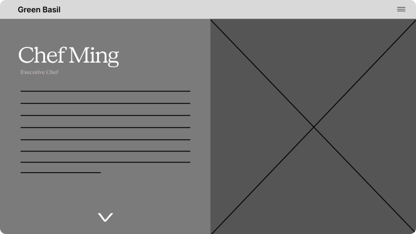

2025
Green Basil
Overview
Green Basil is a beloved Burnaby restaurant established in 2006.
As a UX Researcher on this project, I helped design a full brand and website redesign bridging the gap between the restaurant and its local community.
What I Did
User Research
User Interface Design
Prototyping
Created With
2 UI Designers
2 UX Designers (Me Included)
Timeline
Apr 2025 (2 Weeks)

The Problem
Through conversations with the owner and customers, we found that this long-time Burnaby staple was struggling to adapt to a younger crowd now dominating the Metrotown area all while trying to retain the loyal corporate regulars who built the restaurant's reputation.
Clunky Digital Presence
The initial website had many significant usability issues which harmed their image as a quality dining experience.
Dated Visual Identity
Green Basil had no clear visual language. It made it difficult to establish a memorable image for its customers.
With our research in hand, we asked:
How might a digital + brand refresh reflect Green Basil's growing identity and attract a younger customer base while staying true to its cultural roots?
Seeing What Works
Looking into other successful fine dining establishments, there were 3 main things they all had in common:
1. Photography First
High quality food photography is what drives engagement.
2. Curated Color Palettes
Warm tones and a dark accent creates a sense of luxury, attracting customers.
3. Concise Navigation
Customers are able to access key parts of the site with minimal effort.
The Process
Wireframes allowed us to establish the structure and layout before committing to any visual direction.

→